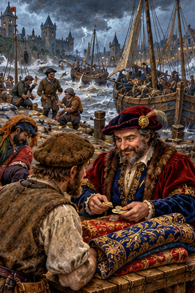
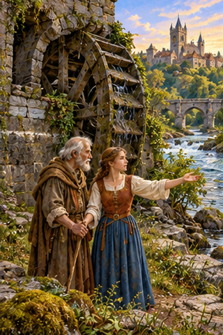
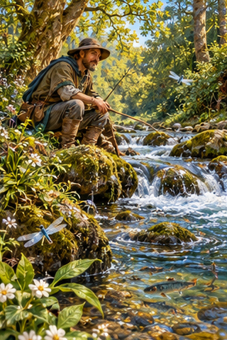
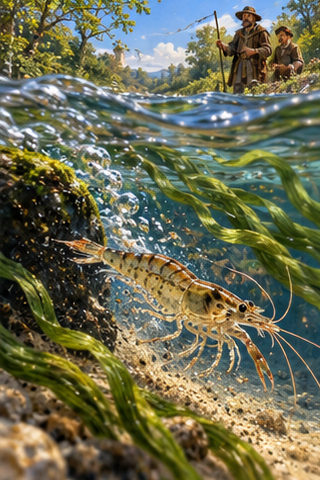
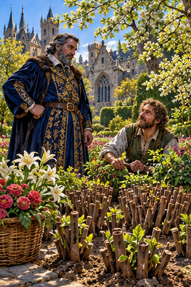
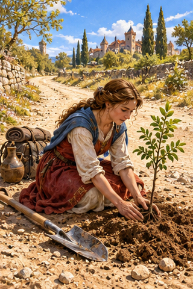
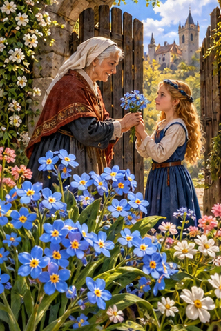
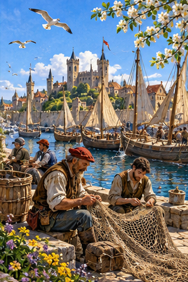

PDD Batch 21 — review only
Ten 320×480 portraits, in manifest order. Not installed.
Original composite
1. PDD 226 — A río revuelto, ganancia de pescadores
pdd226.jpg2. PDD 227 — Cuando el río suena, agua lleva
pdd227.jpg
3. PDD 228 — Agua pasada no mueve molino
pdd228.jpg
4. PDD 229 — Cuando el agua canta, la vida cuenta
pdd229.jpg
5. PDD 230 — Camarón que se duerme, se lo lleva la corriente
pdd230.jpg
6. PDD 231 — Podrán cortar todas las flores, pero no podrán detener la primavera
pdd231.jpg7. PDD 232 — el plenilunio
pdd232.jpg
8. PDD 233 — Donde hay un árbol que plantar, plántalo tú
pdd233.jpg
9. PDD 234 — el nomeolvides
pdd234.jpg
10. PDD 235 — El mar/la mar también necesita primavera
pdd235.jpg